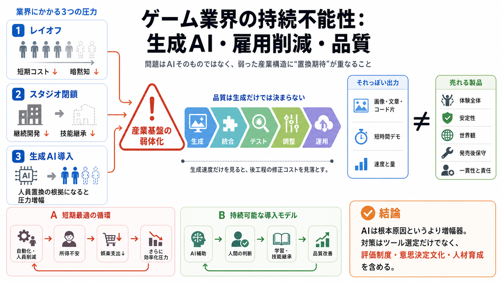

レイオフ
人件費は短期に下がるが、経験、連携、暗黙知も組織から失われる。

Industry warning
Dwarf Fortress制作者 Tarn Adamsの発言から、Generative AI（生成AI）、雇用削減、品質、そして市場の循環を読み解く。
AI adoption · employment · product quality · governance
Three pressures
大規模レイオフ、スタジオ閉鎖、生成AI導入が同時進行し、現場の制作能力を弱らせている。表面的な効率化が、産業の基盤を削る可能性がある。
人件費は短期に下がるが、経験、連携、暗黙知も組織から失われる。
作品だけでなく、継続開発と技能継承を担う制作単位そのものが消える。
補助技術ではなく、人員置換の根拠として扱われると圧力を増幅する。
The CEO button
Adamsの風刺が突くのは、自動化すれば制作費だけが消え、市場は以前のまま残るという前提だ。制作・雇用・需要は切り離せない。
Quality system
生成AIが得意とするのは成果物候補を作る工程であり、製品全体ではない。売れる品質には統合、反復、判断、長期運用が必要になる。
文章、画像、コードなどの候補を作る。
仕様、世界観、既存システムへ接続する。
不具合、性能、再現性を検証する。
面白さ、難度、バランスを反復する。
更新、保守、プレイヤー対応を続ける。
Appearance versus product
AIのデモは完成像を想像させやすいが、見た目の説得力は品質保証ではない。評価すべき対象は単発の出力ではなく、ゲームとしての整合性だ。
Invisible work
完成物だけを見る経営では、そこに至る試行錯誤や判断がコストとしてしか映らない。AIは、その誤解に「代替できそうな出力」を与える。
レビュー、調整、失敗の回避は成果物の表面に残りにくい。
理解できない仕事が、単純作業や過剰人員に見える。
似た形の生成物を見て、工程全体も置き換えられると考える。
品質差を見抜き、問題を直す専門家まで組織から減る。
Evidence boundary
提供文は現場経験に根ざす論点を示す一方、AI導入前後の定量比較は提示していない。主張、推論、未検証事項を分けて読む必要がある。
経営の自動化への過信が、制作労働、雇用、産業の持続可能性を脅かしている。
見た目の生成能力だけで人員を減らすと、品質や士気に負の影響が出る可能性がある。
AIがレイオフの直接原因か、品質が平均して低下したか、利益が長期改善したかは不明。
Root and amplifier
Adamsの論点では、理解できない仕事を軽視する姿勢はAI以前から存在した。生成AIは、その古い経営問題を高速かつ大規模に実行できるようにする。
短期コストを優先し、制作工程、暗黙知、品質判断、技能育成の価値を把握しない。
即時に成果物らしい出力を見せ、置換可能性を実態以上に確信させやすい。
Demand feedback
企業単体では合理的に見える人員削減も、広く反復されれば所得と購買力を圧迫する。自動化の採算は「誰が買うのか」まで含めて考える必要がある。
企業は短期的な固定費圧縮を期待する。
解雇や賃金圧力が生活者の余力を削る。
成長鈍化への対応として、再びコスト削減が選ばれる。
可処分所得が減れば、ゲーム購入も影響を受けうる。
Organizational cost
雇用不安と専門性の軽視は、人数以上の組織コストを生む。士気、技能継承、創造的な試行が弱れば、長期の制作力も低下しうる。
自分の仕事がいつでも置換対象だと感じれば、心理的安全性と組織への信頼が下がる。
若手採用や育成を止めると、将来の熟練者とレビュー能力が育たない。
短期成果だけを求める環境では、失敗を伴う新しい表現や設計が避けられる。
Replace or augment
Replacement（置換）とAugmentation（補助）は、同じツールを使っても異なる結果を生む。持続可能性は、人間の責任と学習を残す設計に左右される。
Four questions
「使えるか」だけでは不十分であり、品質、人間、雇用、市場を同時に確認する。どれか一つでも未設計なら、全面展開より限定実験が妥当だ。
既存水準と同等以上か。後工程の修正を含む総コストで改善しているか。
最終判断者、レビュー責任、異常時の停止権限が明確か。
再配置、育成、若手の入口、専門知の継承をどう維持するか。
短期削減がブランド、顧客信頼、需要、長期供給力を傷つけないか。
Measure the system
導入前の基準値を保存し、限定チームで比較しなければ因果は見えない。速度の改善と、品質・雇用への副作用を同じ表で追う。
Balanced reading
Adamsの発言は「AI反対」の一言には還元できない。重要なのは、技術の可能性を試しながら、置換の前提と経営の自己欺瞞を検証することだ。
制作は複雑で、見た目の出力だけでは品質も人間の価値も測れない。
市場環境、資本戦略、管理失敗、AI導入の影響を混同せず比較する。
工程別の適合性、品質、総コスト、雇用への影響を導入前後で測る。
Sustainable adoption
人間の判断、技能の継承、製品品質、そして買い手が存在する市場。効率化がこれらを壊すなら、それは進歩ではなく将来の制作力の前借りである。
Which, once more, has exhausted Dwarf Fortress' creator Tarn Adams, who spoke to PC Gamer's Joshua Wolens during Gamesco…
Aujourd'hui, 19:56 Speaking to PC Gamer's Joshua Wolens at Gamescom 2026, Tarn Adams, co-creator of Dwarf Fortress, sai…
“Everyone I know, their bosses are slowly getting psychosis, right?” It’s a statement that could perhaps be universally …
.79998C18.4%204.59998%2018.4%204.19998%2018.6%203.99998C18.8%203.79998%2019.2%203.79998%2019.4%203.99998L21.6%206.19998L…
Speaking to PC Gamer's Joshua Wolens at Gamescom 2026, co-creator Tarn Adams gets a little into it while talking about h…